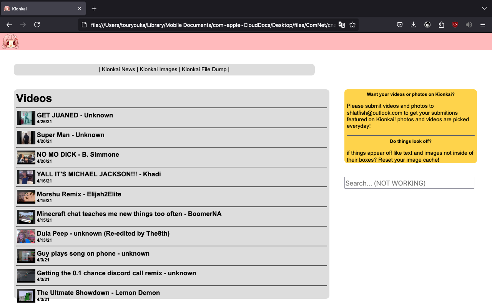
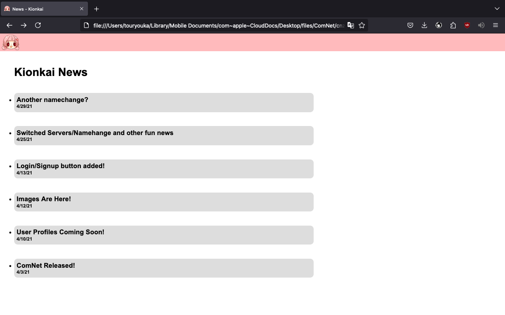
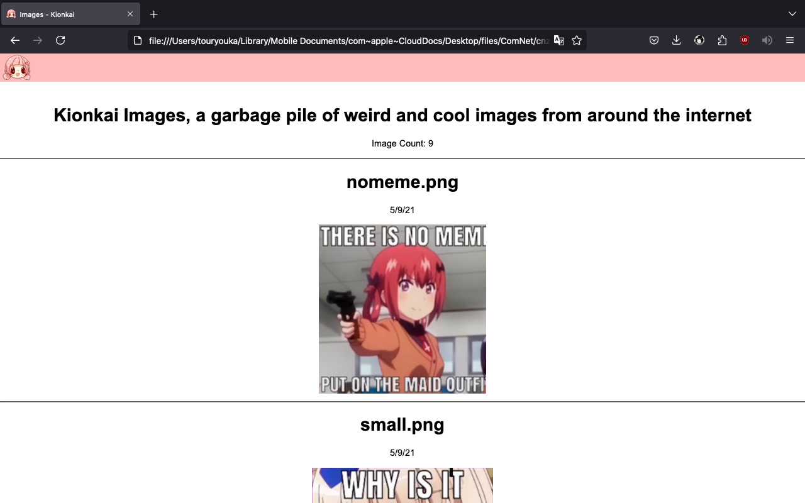
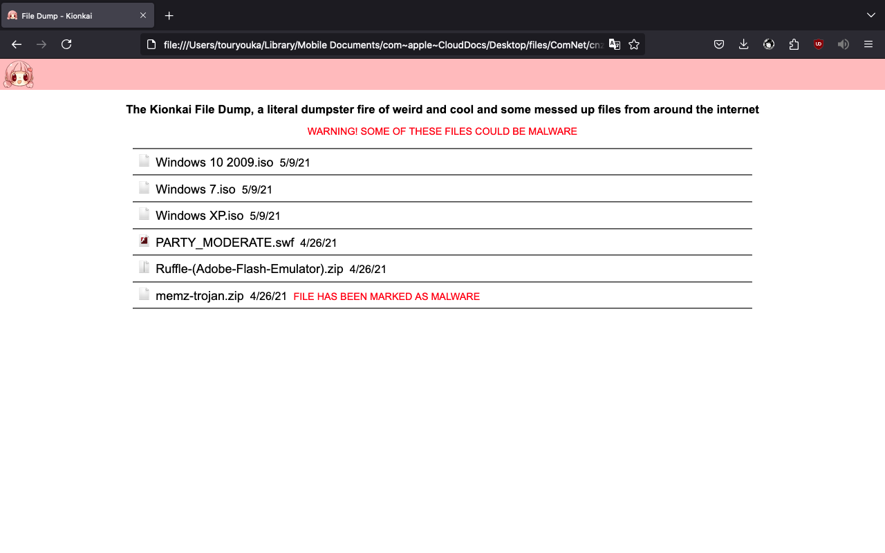
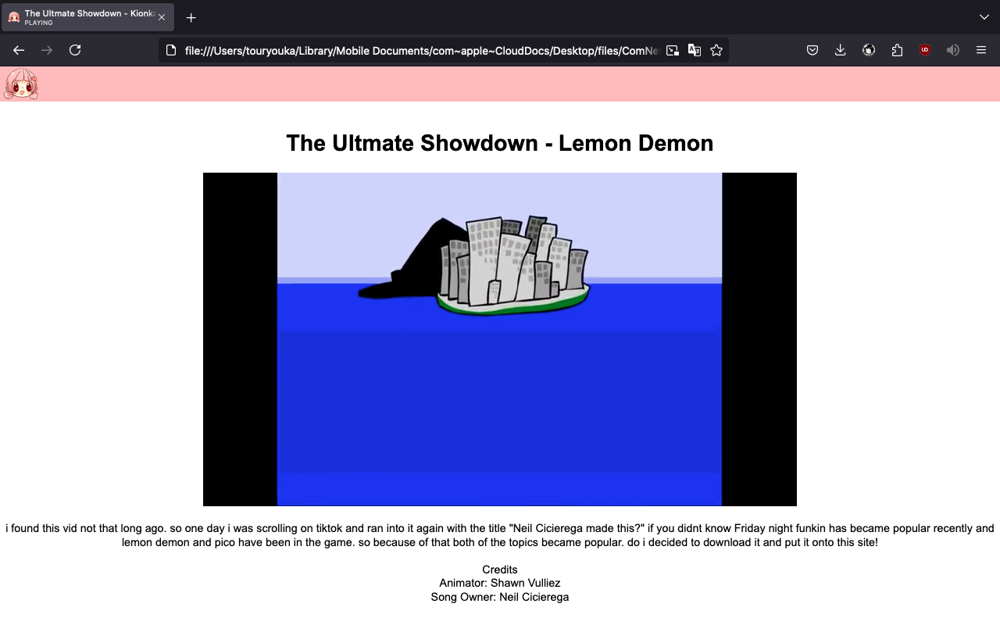
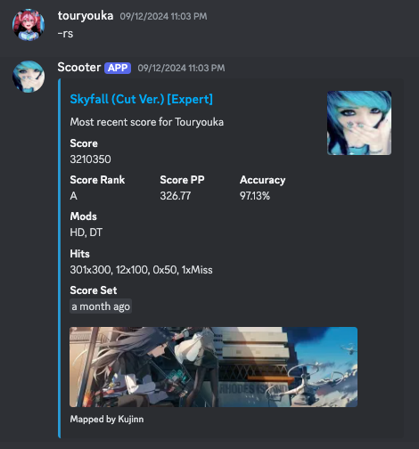
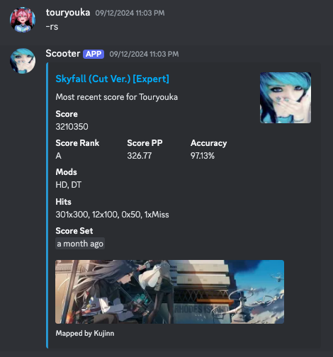

Home
Hey! Welcome to my website! I hope you have a good time here! Maybe read my About Me or maybe check out some of my Links!
About Me
I'm a sort of developer who knows how to develop things sometimes... I mostly play osu! (basically quit that game)... Right now my game of interest is Minecraft! I mostly (more like always) waste all of my time on Hypixel Skyblock... As you can tell this website is based on many 90s websites :3 I just really LOVE the design of oldschool websites...
Fun Facts!
1. in 2021 i made my FIRST hosted website! I was 12 at the time so i consider it a big achivement! (extremely lucky to still have the source code for this :3)
Screenshots
    2. My main programming language is Python! i find it really fun and easy to learn :3
2. I also know how to program in Java, JavaScript, HTML, CSS, C, C#, PHP, And Luau (Roblox programming language)... (I'm a noob at some of these...)
4. I made a Discord bot called scooter! It's an osu! bot that contacts the osu api to give you data about a persons profile or recent play! Sadly the bot isnt available for public use since i cannot afford hosting services for a discord bot... :(
Screenshots
 


Links
- My GitHub!
- My Twitter!
- My Bluesky!
- My Twitch!
- My Youtube Channel!
- My (2nd) Youtube Channel! (where i make real videos sometimes)
Contact
Email me at: shlatfish@outlook.com